No se decide un elopement en los Dolomitas porque salgan fotos bonitas. Se decide porque se ha entendido lo que un día de boda puede llegar a ser de verdad.
La mayoría de las bodas siguen un guion escrito hace años, para otras personas. Lista de invitados, banquete, plano de mesas, programa. Un día lleno de obligaciones al final del cual los novios están agotados y apenas recuerdan cuándo hablaron de verdad por última vez.
Jasmi y Dominik no querían eso. Por eso el helicóptero. Por eso el 6 de junio. Por eso estas fotos no parecen una boda – parecen la vida.
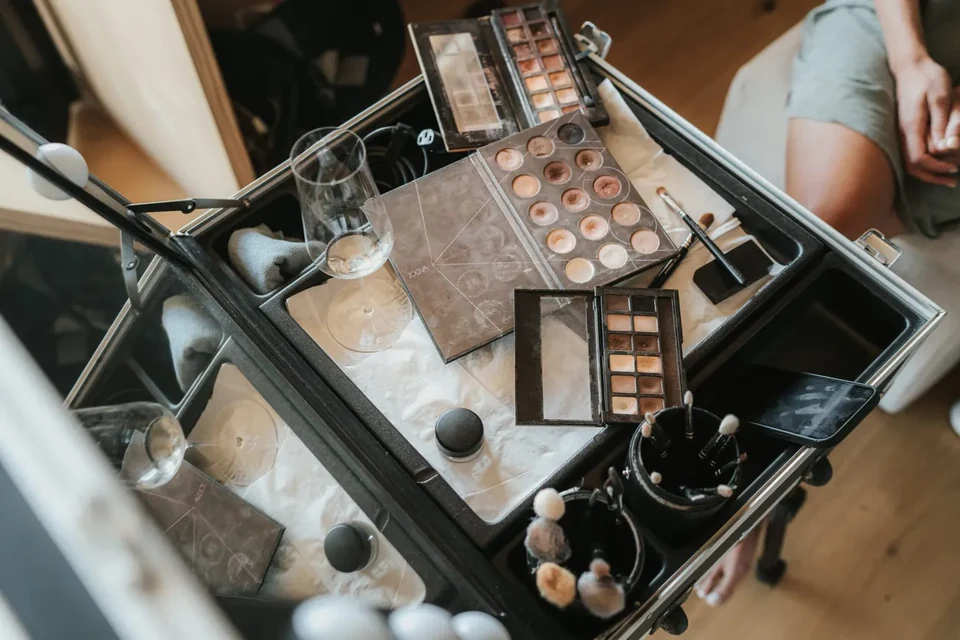
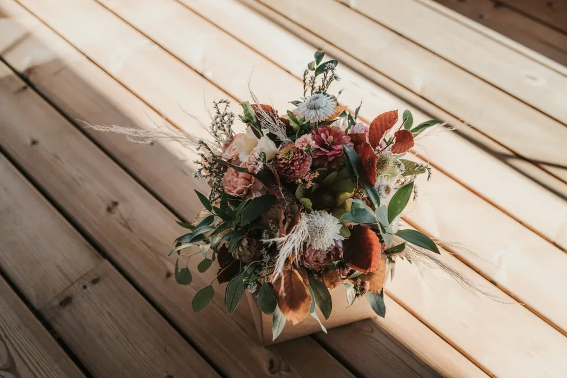
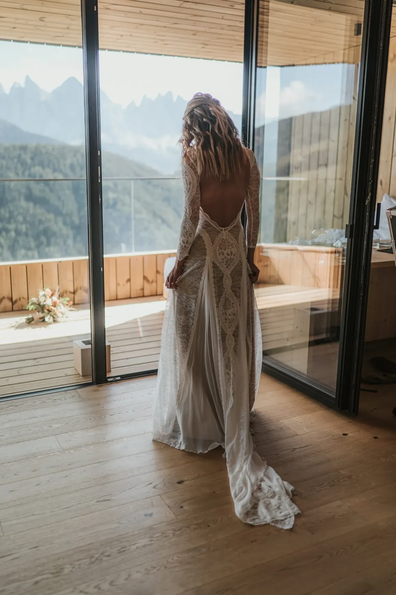
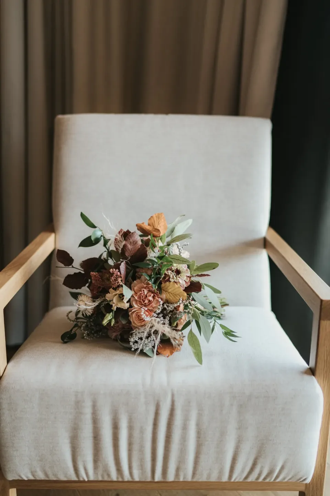
Un elopement en los Dolomitas es lo contrario de cumplir un trámite. Es la decisión de vivir el día en lugar de organizarlo. Sin un horario que os apremie, sin expectativas que satisfacer — solo vosotros dos, la luz y el silencio.
Estas montañas piden algo. Madrugar, decir sí al tiempo que haga, el valor de cambiar el gran montaje por un único momento sincero. Si no es lo que queréis, no es para vosotros. Si lo es, tendréis un día que os pertenece por completo.
El helicóptero no es aquí el lujo — es el atajo: minutos en vez de horas, una cumbre que casi nadie pisa y la certeza de tenerla solo para vosotros. Lo que queda no son puntos de un programa, sino imágenes que se sienten como un recuerdo, no como una puesta en escena.
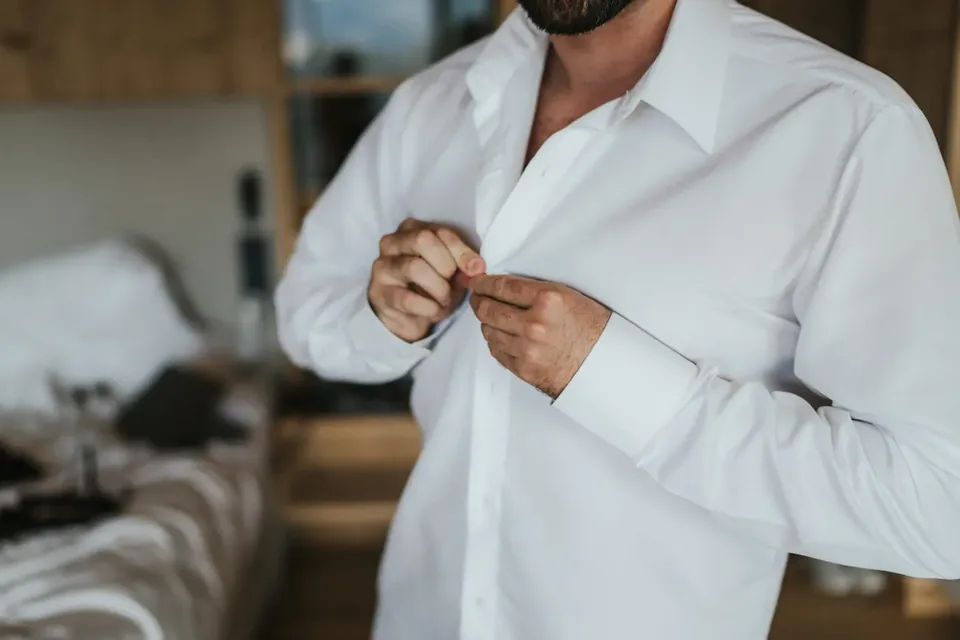
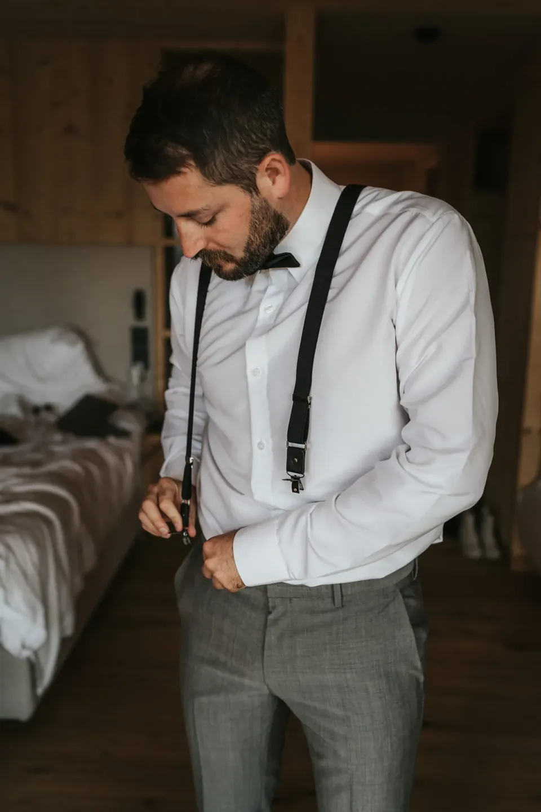
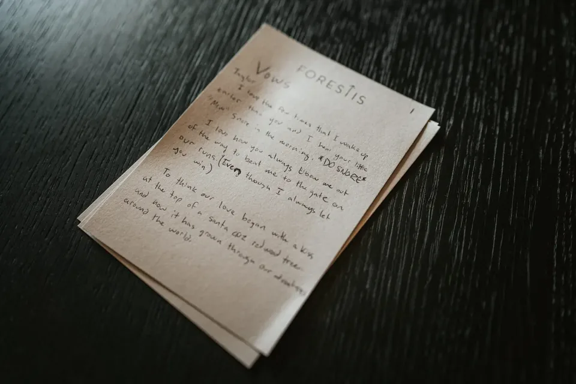
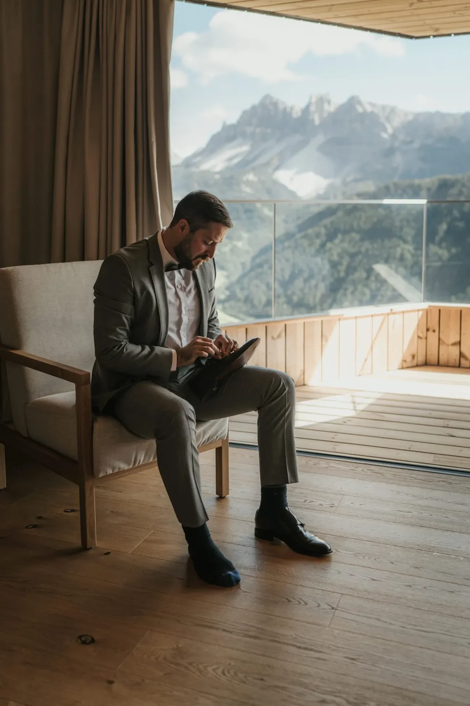
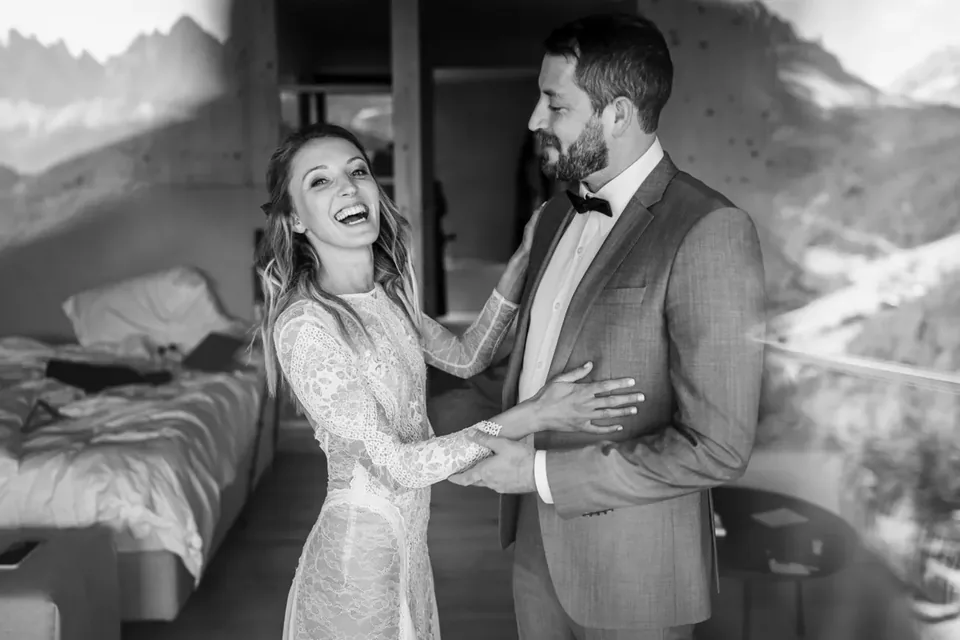
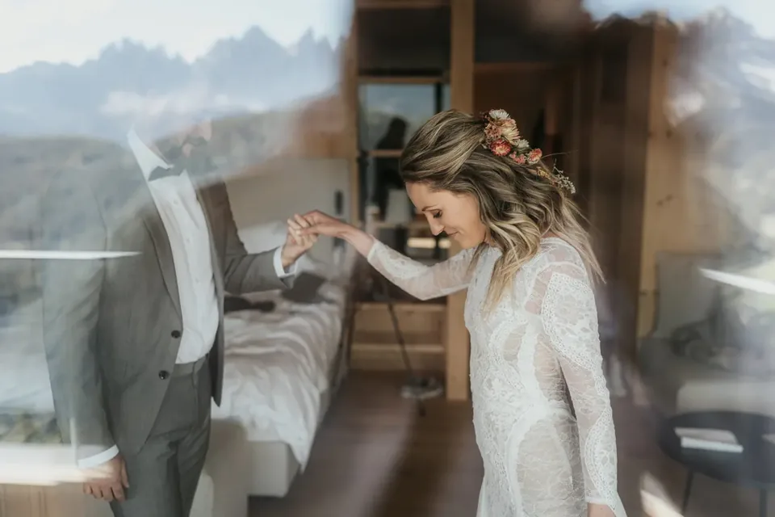
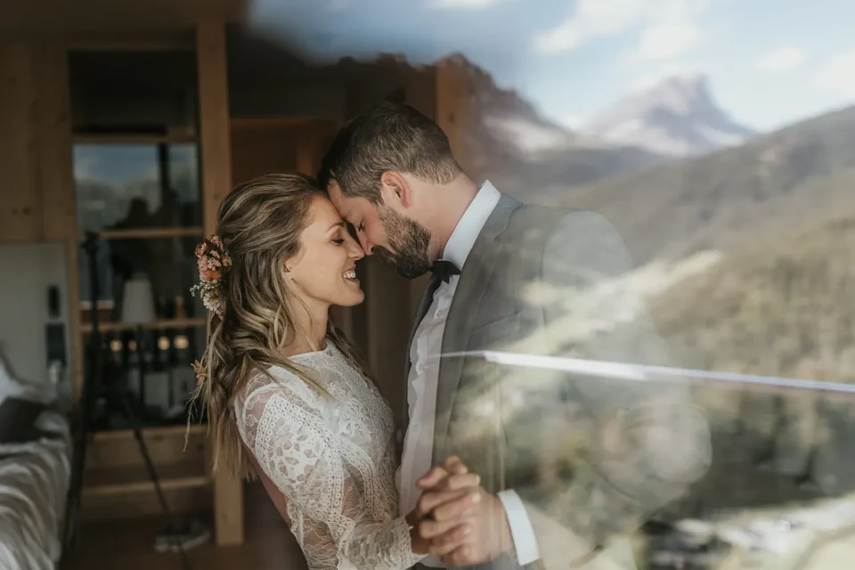
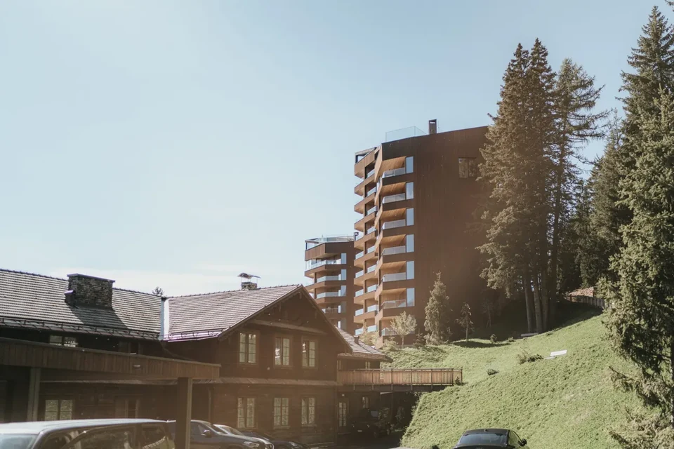


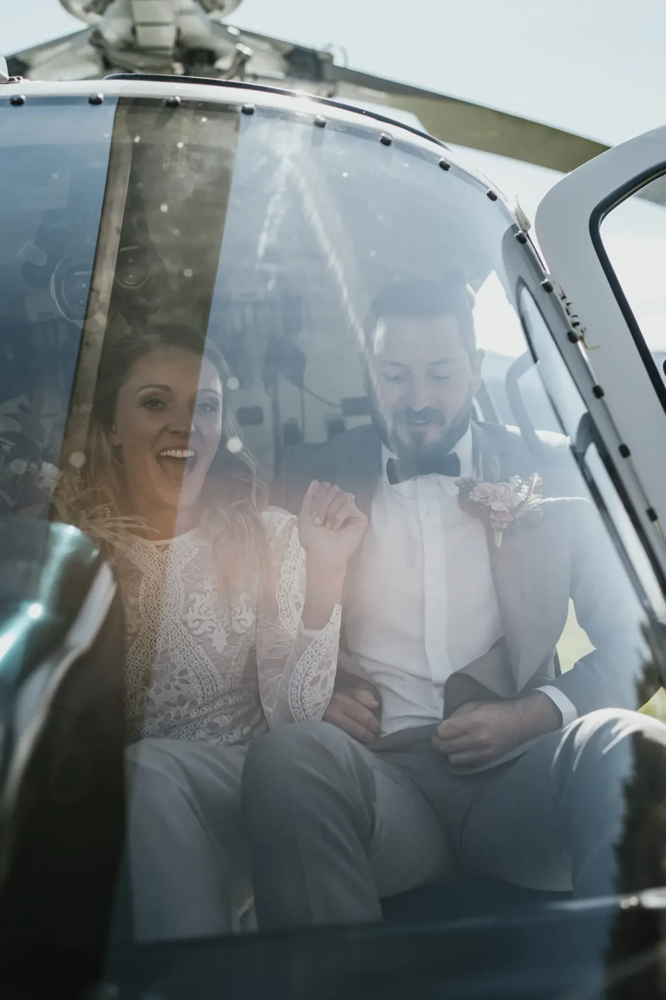
Usamos cookies para estadísticas anónimas (Google Analytics vía Google Tag Manager) para mejorar el sitio. La analítica solo se activa con tu consentimiento. Política de privacidad